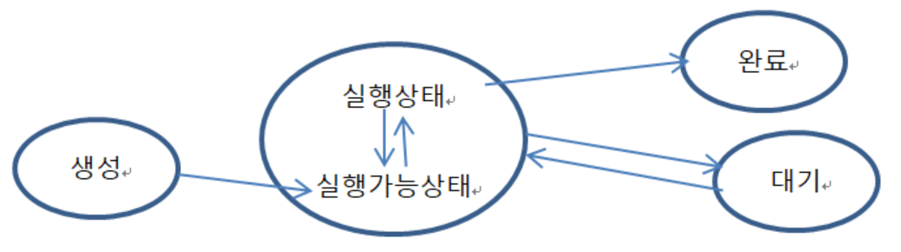

Thread
Thread
목표 :
멀티 프로세스와 스레드를 구분할 수 있다.
멀티 태스킹 개념을 이해한다.
Thread의 life cycle을 이해한다.
동기화(synchronized) 개념을 이해한다.
자바에서 활용하는 Thread를 이해하고 멀티 스레드 문법으로 구현할 수 있다.
1. 프로세스와 스레드란?
실행 가능한 보조기억장치(HDD, SDD)에 있는 파일을 우리는 프로그램이라 부릅니다.
이러한 프로그램을 실행하게 되면, 이 프로그램은 메모리에 상주하게 되고 우리는 이를 프로세스라 부릅니다.
Windows는 멀티프로세스를 지원하고 있죠.
쉽게 말해서 하나의 CPU(컴퓨터)가 동시에 여러 프로그램을 동시에 실행할 수 있습니다.
이것이 멀티 프로세스입니다.
멀티프로세스 시스템에서 각 프로세스는 동시에 실행되는 것처럼 보이지만,
CPU가 하나이기 때문에 실행시간을 잘게 나누어 프로세스가 돌아가는데 각 프로세스들이 돌아가면서
CPU를 점유하는데 프로세스간 CPU점유작업인 스케줄링을 한다.
그럼 스레드(멀티스레드)란 무엇일까요? 하나의 프로그램이 동시에 여러 개의 일을 수행할 수 있도록 해 주는 것입니다.
위에서 말한 하나의 프로세스에서 다시 여러 가지 일을 하는 것을 뜻 합니다.
예를 들어 동일한 채팅프로그램에서 상대의 글 내용을 전송받기도 하고 내 글의 내용을 상대에게 전송하고 있는 것 입니다.
멀티스레드이죠.
JAVA는 기본적으로 멀티스레드를 지원하기 위해 java.lang.Thread 클래스를 제공하고 있습니다.
멀티프로세스 vs. 멀티쓰레드
하나의 새로운 프로세스를 생성하는 멀티프로세스 보다 하나의 새로운 쓰레드를 생성하는 것이 더 적은 비용이 듭니다.
스레드는 두 가지 형태로 존재 합니다. 하나는 객체 하나를 n개의 스레드가 공유하는 방식이고,
또 다른 하나는 객체 하나당 하나의 스레드가 존재하는 방식 입니다.
(멀티스레드의 장점)
자원을 보다 효율적으로 사용할 수 있다.
사용자에 대한 응답성이 향상된다.
작업이 분리되어 코드가 간결해 진다.
(멀티스레드의 단점)
동기화(synchronization)에 주의해야 한다.
교착상태(dead-lock)가 발생하지 않도록 주의해야 한다.
각 쓰레드가 효율적으로 고르게 실행될 수 있게 해야 한다(☞프로그래밍할 때 고려해야 할 사항들이 많다)

2. 스레드의 생명주기
가) 생성
나) 실행
다) 대기
라) 완료
멀티 스레드 문법
package com.tj.ex1runerble;
public class ThreadTest implements Runnable {
@Override
public void run() {
System.out.println(Thread.currentThread().getName());
System.out.println("Thread Test");
for (int i = 0; i < 10; i++) {
System.out.println("i=" + i);
try {
Thread.sleep(500);// 0.5초
} catch (InterruptedException e) { }
}
}
}
package com.tj.ex1runerble;
public class ThreadMain {
public static void main(String[] args) {
ThreadTest threadTest = new ThreadTest();
// 스레드 생성. "작업A" 라는 이름을 가지고 있다.
Thread thread = new Thread(threadTest, "작업A");
thread.start(); // "작업A" 스레드 시작. 메소드 run()에 있는 작업을 수행.
System.out.println("메인 함수에서 출력함 : "
+ Thread.currentThread().getName());
}
}
Thread 클래스 상속을 통한 Thread
package com.tj.ex2thread;
public class ThreadTest extends Thread {
@Override // 동시에 작헙할 일을 여기에 기술한다.
public void run() {
System.out.println(Thread.currentThread().getName());
System.out.println("Thread Test");
for(int i = 0; i < 10; i++) {
System.out.println("i = " + i);
try {
Thread.sleep(500);
} catch (InterruptedException e) { }
}
}
}
package com.tj.ex2thread;
public class ThreadMain {
public static void main(String[] args) {
ThreadTest thread = new ThreadTest(); // 작업run() 도 여기 있고 thread 도 있다.
thread.setName("작업A"); // 쓰레드의 이름을 준다.
thread.start();
System.out.println("메인 함수 에서 출력 : "+
Thread.currentThread().getName());
System.out.println("메인 쓰레드는 완료가 되었다.");
}
}
Synchronized
Synchronized의 사전적 의미는 통합, 동시 정도의 의미 입니다.
위에서 살펴본 봐와 같이 JAVA 멀티쓰레드에서 하나의 객체에 n개의 스레드가 진행될 경우가 있습니다.
이런 경우 문제가 생길 수 있습니다.
객체에 선언되어 있는 인스턴스변수를 스레드에서 공유하게 되어, 인스턴스의 값에 영향을 미치게 됩니다.
이런 경우를 대비해서 JAVA에서는 synchronized라는 키워드를 이용합니다. Synchronized는 먼저 수행되는
스레드의 모든 작업이 끝날 때까지 다른 스레드는 기다리도록 하는 예약어입니다.
즉, 동기화란? 하나의 자원을 여러 태스크가 사용하려 할 때에, 한 시점에서 하나의 태스크만이 사용할 수 있도록 하는 것.
대부분의 응용 프로그램에서 다수개의 스레드가 공유할 수 있는 부분이 요구되며 공유부분은 상호배타적으로 사용되어야 합니다.
예를 들어 영화극장 좌석예매시스템이 있습니다. 네트워크를 이용하여 여러 매표소에서 좌석이 예매될 때,
매표소들간에 좌석 예매시스템의 좌석 정보를 동시에 접근할 수 있다면,
같은 좌석을 여러 사람에게 중복되게 예매할 수도 있습니다.
따라서 이렇게 여러 데스크들이 하나의 정보에 접근할 때에는, 한번에 하나씩의 데스크만이 접근할 수 있도록 해야 합니다.
객체1개. 스레드n개 (mulite thread)
package com.tj.ex3multethread;
public class ThreadTest implements Runnable {
private int testRun = 0;
@Override
public void run() {
for (int i = 0; i < 10; i++) {
test();
// 잠깐 잠재워
} // for
}// run
private synchronized void test() {
// synchronized : 하나의 쓰레드를 모두 수행 하기전에는 다른 쓰레드는 실행되지 않는다.
if (Thread.currentThread().getName().equals("A")) {
testRun++;
System.out.println("- - - A 수행중 - - -");
}
System.out.println("testNum = "
+ testRun + "Thread Name = " + Thread.currentThread().getName());
try {
Thread.sleep(500);
} catch (InterruptedException e) {}
}
}
package com.tj.ex3multethread;
// 쓰레드 N 개가 쓰레드 1개를 공유하는 작업예제
public class ThreadMain {
public static void main(String[] args) {
ThreadTest threadTest = new ThreadTest(); // 스레드 객체 만듬.
Thread threadA = new Thread(threadTest, "A");
Thread threadB = new Thread(threadTest, "B");
threadA.start();
threadB.start();
System.out.println("main thread 에서도 작업합니다." + Thread.currentThread().getName());
}
}
Thread 종합예제
Account Class
package com.tj.ex6atmcardn;
public class Account {
private int balence; // 잔액.
public Account(int balence) {
this.balence = balence;
}
public synchronized void deposit(int amount, String who) { // 한 작업이 마칠때 까지 다른 작업은 시작되지 않음.
System.out.println("★" + who + "가 입금시작");
balence += amount;
System.out.println(who + "가 " + amount + "입금하여 잔액 " + balence);
System.out.println("★--" + who + "가 입금 완료 --★");
}
public synchronized void whitdrow(int amount, String who) { // 한 작업이 마칠때 까지 다른 작업은 시작되지 않음.
System.out.println("★" + who + "가 출금시작");
if (balence >= amount) {
balence -= amount;
System.out.println(who + "가 " + amount + "출금하여 잔액 " + balence);
} else {
System.out.println("잔액 : "+ balence + " 잔액이 부족합니다.");
}
System.out.println("★--" + who + "가 출금 완료 --★");
}
}
ATM_action Class
package com.tj.ex6atmcardn;
public class ATM_action implements Runnable {
private Account obj; // 계좌
private int toggle = 0;
public ATM_action(Account obj, int toggle) {
this.obj = obj;
this.toggle = toggle;
}
@Override
public void run() { // deposit() <-> whitdrow() 반복
for (int i = 0; i < 5; i++) {
if (toggle == 1) {
obj.deposit(1000, Thread.currentThread().getName());
toggle = 0;
} else {
obj.whitdrow(1000, Thread.currentThread().getName());
toggle = 1;
}// if
}// for
}// run()
}
Main Function
package com.tj.ex6atmcardn;
public class Main {
public static void main(String[] args) {
Account obj = new Account(1000);
ATM_action card_mom = new ATM_action(obj, 0);
ATM_action card_dad = new ATM_action(obj, 0);
Thread mom = new Thread(card_mom,"엄마");
Thread dad = new Thread(card_dad,"아빠");
mom.start();
dad.start();
}
}
오늘의 예제 - 투표율 무작위 증가
VoteThread Class
package com.tj.ex7vote;
import java.util.Random;
public class VoteThread extends Thread {
private final int TARGETRATE = 100; // 100%
private int voteRate; // 투표율
private Random random; // 투표증가율 난수 발생.
public VoteThread(String name) {
super(name); // 스레드이름
random = new Random();
}
@Override
public void run() {
StringBuilder bar = new StringBuilder(); // 문자열을 하나 선언.
while(true) {
// voteRate 를 random 으로 증가시키면서 * 그래프로 출력하고 100% 면 중지한다.
voteRate += random.nextInt(20); // 0~20
bar.delete(0, bar.toString().length()); // 변수내용을 모두 지음
if(voteRate >= TARGETRATE) {
voteRate = TARGETRATE;
for (int i = 0; i< voteRate; i++) {
bar.append("*"); // 그래프를 voteRate 만큼 * 만들기
}
System.out.println(Thread.currentThread().getName() +
"의 개표율 (" + voteRate + "%)\t" + bar);
break; // 개표율이 100이면 while 문 탈출.
} else {
for(int i = 0; i< voteRate; i++) {
bar.append("*"); // 그래프를 voteRate 만큼 *로 만듬.
}
System.out.println(Thread.currentThread().getName() +
"의 개표율 (" + voteRate + "%)\t" + bar);
} // if
try {
Thread.sleep(300); // 프로세스 0.3초 중지.
} catch (InterruptedException e) {}
}// while
}// run();
}// class
VoteMain Class
package com.tj.ex7vote;
public class VoteMain {
public static void main(String[] args) {
VoteThread location1 = new VoteThread("지역1");
VoteThread location2 = new VoteThread("지역2");
VoteThread location3 = new VoteThread("지역3");
location1.start();
location2.start();
location3.start();
}
}